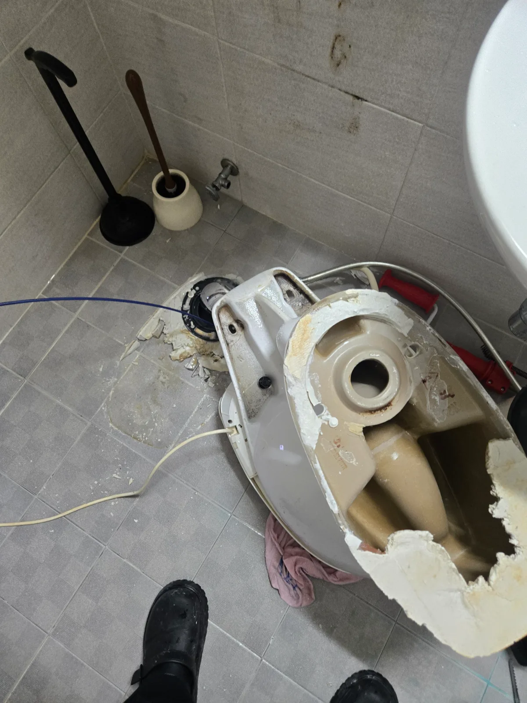

중랑구 면목동 변기막힘, 현장 도착 후 진단
중랑구 면목동 빌라에서 변기막힘이 발생했다는 긴급 연락을 받고 신라건축설비가 필요한 장비를 준비해 신속하게 출동했습니다. 물을 내려도 거의 빠지지 않는 상태여서 변기역류를 막기 위해 추가적인 물 사용을 중단했습니다.
변기막혔을때 일반적인 휴지나 오물이 원인이라면 관통기나 석션으로 해결할 수 있습니다. 그러나 과일이나 단단한 생활용품이 들어가면 장비로 밀수록 이물질이 변기 굴곡에 더욱 단단히 끼거나 오수관 쪽으로 넘어갈 수 있습니다.
현장 반응을 확인한 결과 크기가 있는 고형물이 변기 내부를 막고 있는 것으로 판단했습니다. 막힘 전문 신라건축설비는 관통작업만 반복하지 않고 변기를 탈거해 변기 내부와 하부 오수관을 각각 점검했습니다.
1단계: 증상 확인과 필요한 장비 작업
변기 주변을 보양하고 고정 부위와 연결 부속을 분리한 뒤 변기를 안전하게 탈거했습니다. 하부 오수관을 확인한 결과 막힘은 건물 오수관이 아니라 변기 자체의 굴곡진 내부에 있었습니다.
탈거한 변기의 상부와 하부에서 이물질 제거를 시도했지만 단단히 끼어 움직이지 않았습니다. 두껍게 잘린 레몬 슬라이스가 변기 내부의 좁은 굴곡 구간을 막고 있어 일반 공구로는 꺼내기 어려웠습니다.

2단계: 원인 구간 처리와 정상 작동 확인
레몬 슬라이스가 걸린 정확한 위치를 확인하고 변기 도기의 필요한 부분에 직접 접근했습니다. 도기 파편이 주변으로 튀지 않도록 안전하게 작업하면서 내부 배수 통로를 확인했습니다.
사진처럼 변기 안쪽에는 두꺼운 레몬 슬라이스가 그대로 끼어 있었습니다. 레몬 조각을 직접 꺼내 면목동 변기막힘의 원인을 제거하고 하부 오수관에도 남아 있는 이물질이 없는지 점검했습니다.

작업 결과와 재발 방지 안내
중랑구 면목동 빌라 변기막힘의 원인은 내부 굴곡에 정확하게 끼어 있던 두꺼운 레몬 슬라이스였습니다. 일반적인 관통작업으로 제거할 수 없었지만 변기를 탈거하고 막힌 위치까지 직접 확인해 원인을 제거했습니다.
레몬 슬라이스와 과일 조각, 음식물 덩어리처럼 지름이 큰 물체는 변기의 굴곡진 내부 배관을 통과하지 못하고 심한 변기막힘과 변기역류를 일으킬 수 있습니다. 이때 반복해서 물을 내리거나 관통기를 무리하게 사용하면 이물질이 더욱 깊이 들어갈 수 있습니다.
신라건축설비는 일반적인 휴지막힘부터 과일·음식물·생활용품으로 발생한 고난도 변기막힘, 변기 탈거와 오수관 점검까지 대응합니다. 작은 생활 배관 문제부터 빌라·오피스텔·상가·대형건물의 공용배관막힘과 배관공사까지 가능한 막힘 전문업체입니다.
중랑구 변기막힘, 면목동 변기막힘, 빌라 변기막힘, 변기막혔을때, 레몬 변기막힘, 과일 변기막힘 또는 변기 탈거가 필요하다면 신라건축설비가 서울·경기·인천 전 지역에 24시간 신속하게 출동해 당일 해결을 목표로 작업하겠습니다.
최종 조치: 변기를 탈거해 하부 오수관과 변기 내부를 구분하여 점검했습니다. 레몬 슬라이스가 변기 도기 깊은 곳에 단단히 끼어 있어 정확한 위치를 확인한 뒤 필요한 부분에 직접 접근해 막힘 원인을 제거했습니다.
현장 방문 전 확인하는 비용과 작업 범위
신라건축설비는 현장 증상과 배관 구조를 확인한 뒤 필요한 작업과 예상 비용을 안내합니다. 단순 관통으로 해결되는지, 배관내시경·석션·고압세척 또는 변기 탈거가 필요한지는 현장 상태에 따라 달라집니다. 출장비와 야간 작업비, 추가 장비 비용이 발생할 수 있는 경우 작업 전에 먼저 설명하고 동의를 받은 범위에서 진행합니다.
업체를 선택할 때 확인할 사항
무조건적인 ‘0원’ 표현보다 실제 작업 범위, 추가 비용 조건, 사용 장비와 사후 대응 기준을 확인하는 것이 중요합니다. 해결되지 않았을 때의 비용 기준과 작업 후 동일 증상 발생 시 점검 범위를 사전에 문의해두면 불필요한 분쟁을 줄일 수 있습니다.
중랑구 변기막힘 자주 묻는 질문
변기를 꼭 탈거해야 하나요?
중랑구 면목동 빌라의 변기 물이 내려가지 않고 내부에 고이는 심한 변기막힘이 발생했습니다. 일반적인 관통작업으로 해결되지 않아 크기가 있는 이물질이 변기 내부를 막고 있는 것으로 의심되는 상태였습니다.처럼 증상이 나타나더라도 원인은 현장마다 다를 수 있습니다. 장비와 배관 구조를 확인한 뒤 필요한 작업 범위를 안내합니다.
작업 전 비용을 알 수 있나요?
작업 전 증상과 현장 여건을 확인해 예상 범위와 비용을 먼저 안내합니다. 변기 탈거, 장비 추가 투입 또는 공용배관 작업이 필요한 경우 고객 동의 없이 임의로 진행하지 않습니다.
같은 증상이 다시 생기면 어떻게 하나요?
완료 후 정상 작동을 함께 확인하고 작업 범위에 따른 사후 안내를 드립니다. 동일 증상이 반복되면 현장 기록을 기준으로 원인을 다시 점검합니다.
변기막힘 서울·경기 출동지역
신라건축설비는 중랑구 면목동 현장을 포함해 서울 25개 구와 경기도 31개 시·군의 배관 문제를 상담합니다. 현장 거리와 기사 배정 상황에 따라 출동 가능 여부를 먼저 안내드립니다.
서울 전 지역
강남구 · 강동구 · 강북구 · 강서구 · 관악구 · 광진구 · 구로구 · 금천구 · 노원구 · 도봉구 · 동대문구 · 동작구 · 마포구 · 서대문구 · 서초구 · 성동구 · 성북구 · 송파구 · 양천구 · 영등포구 · 용산구 · 은평구 · 종로구 · 중구 · 중랑구
경기도 주요 출동지역
수원시 · 용인시 · 고양시 · 화성시 · 성남시 · 부천시 · 남양주시 · 안산시 · 평택시 · 안양시 · 시흥시 · 파주시 · 김포시 · 의정부시 · 광주시 · 하남시 · 광명시 · 군포시 · 양주시 · 오산시 · 이천시 · 안성시 · 구리시 · 의왕시 · 포천시 · 양평군 · 여주시 · 동두천시 · 과천시 · 가평군 · 연천군